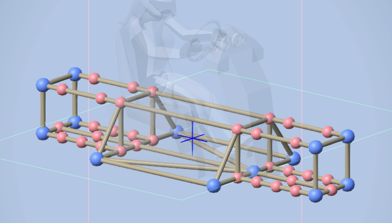
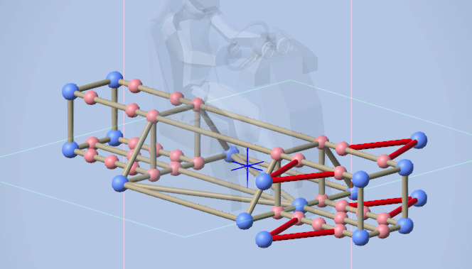
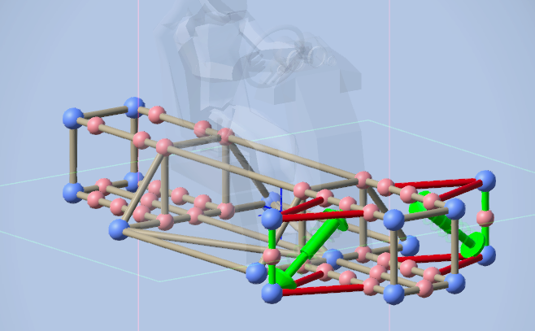
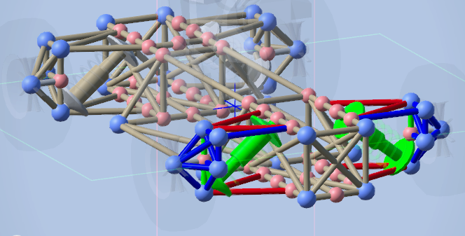
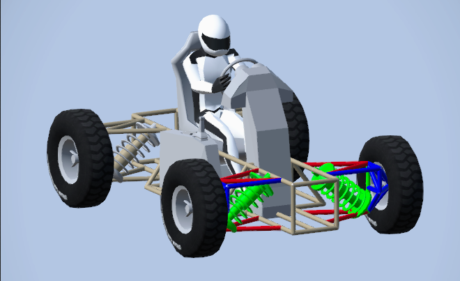
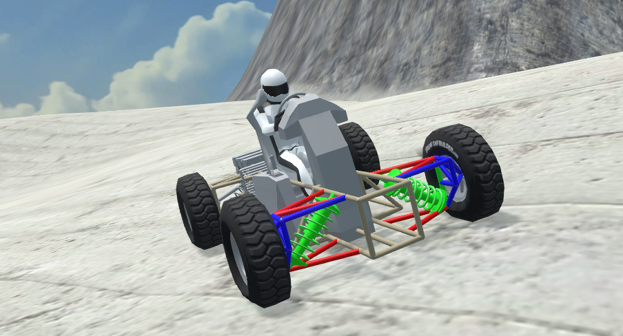

The double wishbone suspension is much more advanced however it is the best type of suspension to use. The tire only moves up and down and the entire tire will touch the ground. Because this suspension needs more parts I have hidden many crossbraces and other parts to make it better to see and learn. I will not be going over steering. Below is an example of what your frame should look like. The midpoints are important and will be used.

Start off just like the single brace suspension and draw a triangle, above this triangle draw another triangle. What you need is in red.

Next, connect the 2 triangles with a bar. This bar will connect the top and bottom triangle together. After drawing that bar draw a spring from the edge of the bottom triangle to the top bar of the frame. Once again you will have to adjust the spring depending on your cars weight. What you need is in green.

Now build your wheel brace. This will stop the wheel from beeing loose and it wont break off. The wheel brace is a weird structure to make I tried my best to show how to make it. Wheel brace is in blue.

Finish off by adding your wheels, transmission, etc. Dont forget to tune your springs hardness. The image below is an example of the complete structure. This has no steering.

Now you can see it working and holding up the car. This design is kinda crappy and I would recommend remaking this but if it works dont touch it.
